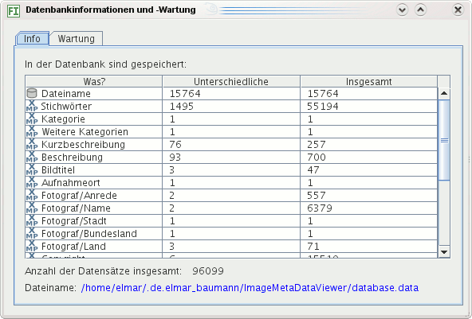
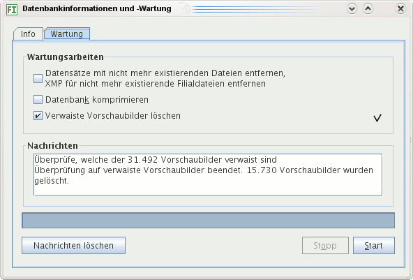

Dieser Menübefehl öffnet einen Dialog mit Informationen über die Datenbank und Möglichkeiten zur Wartung.
Auf dem Info-Kartenreiter sehen Sie, welche Daten enthalten sind in wie vielen Datensätzen. In der Abbildung unten gibt es 50.670 Datensätze mit Stichwörtern. Die Spalte Was zeigt die Art der Daten an, die Spalte Unterschiedliche, wie viele unterschiedliche Daten dieser Art es gibt und die Spalte Insgesamt, in wievielen Datensätzen Daten dieser Art enthalten sind. Beispielsweise könnten Kategorien in 1.000 Datensätzen gespeichert sein, aber es gibt nur 50 unterschiedliche Kategorien, falls mehrere Bilder gleichen Kategorien zugeordnet sind, was praktisch immer der Fall ist (sofern Sie Kategorien benutzen).
Die Anzahl aller Bilder in der Datenbank stehen neben dem Dateinamen.

Der Kartenreiter Wartung bietet an, Datensätze zu entfernen, für die es keine Bilder mehr gibt. Das ist sinnvoll, sonst werden bei Suchen nicht mehr existierende Bilder berücksichtigt.
Das Komprimieren der Datenbank verkleinert ihre Dateigröße. Dies ist in der Regel nicht nötig, kann aber sinnvoll sein nach Programmupdates, bei denen die Datenbank modifiziert wurde oder nachdem Sie sehr viele Metadaten verändert oder gelöscht haben.
